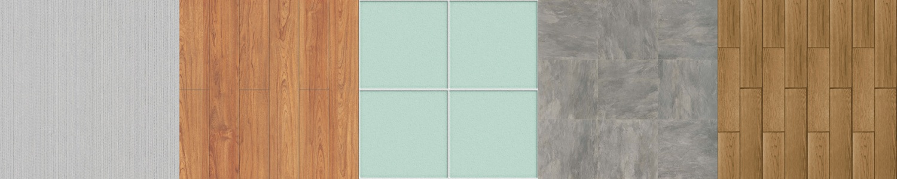

Mobile missions
The five optical sets occupy approximately 15.6 × 10.4 m each. The MuJoCo rollouts drive the same two-station transfer geometry through five different aisle routes and receiver mechanisms. Fixtures, the mobile robot, its hand and the object share one physics model per room. Architectural surfaces and distant furnishings supply the rendered environment. The room-clearance audits check the recorded moving geometry against this set.
Room materials
Genie Sim’s architectural variants were read from the original USD material bindings. Color maps set the finish, roughness maps control the spread of reflections, and normal maps preserve small surface relief. The room assemblies, light placement, scale, English decals and camera edit were made for these missions. Agibot World / Genie Sim Assets · CC BY-NC-SA 4.0 · Per-room material and model manifest

Receiving warehouse
Genie Sim’s gray striated wall finish faces the pallet racks and loading shutter. Worn concrete runs between receiving and outbound sorting.
- genie wall 02 · base color, normal, roughness
- concrete floor worn 001 · base color, roughness, normal
Furnishings include cardboard box 01, hanging industrial lamp, tool cart, wooden crate 01, benchmark carton 005.
Coffee roastery
Genie Sim’s warm wood floor runs from the sample bench to the weighing station. The background includes a roasting drum, a brick wall and a cupping bar.
- genie floor 03 · base color, normal, roughness
- brick wall 001 · base color, roughness, normal
- walnut veneer · base color, roughness, normal
Furnishings include benchmark chair 010, benchmark desk decoration 012, benchmark sofa 002, benchmark table 011, delonghi espresso, potted plant 01, potted plant 02, benchmark cup 129.
Sterile supply department
Genie Sim wall and aqua tile finishes surround the clean-store doors. The base carries the cartridge across the marked transfer threshold.
- genie wall 07 · base color, normal, roughness
- genie wall tile 04 · base color, normal, roughness
- terrazzo tiles · base color, roughness, normal
Furnishings include benchmark refrigerator 000, plastic crate 01, benchmark cleaning products 007, benchmark medicine bottle 000, benchmark storage box 000.
Print bindery
Genie Sim gray tile covers the press aisle. Paper reels, a sheet-fed press and proof posters surround the two stations.
- genie floor tile 05 · base color, normal, roughness
- white plaster 02 · base color, roughness, normal
Furnishings include benchmark chair 011, cardboard box 01, tool cart, wooden crate 01, benchmark book 01.
Conservation gallery
Genie Sim parquet and wall finishes continue past the framed works and display plinths. The sphere goes from the preparation bench to the examination track.
- genie floor 05 · base color, normal, roughness
- genie wall 07 · base color, normal, roughness
- walnut veneer · base color, roughness, normal
Furnishings include benchmark chair 010, antique ceramic vase 01, marble bust 01, potted plant 01, potted plant 02, benchmark book 01, benchmark folder 000.
Restroom dispenser
Washroom fixtures, liquid model and traction experiment
Attribution
Genie Sim Assets by Agibot World are used under CC BY-NC-SA 4.0. The furnished scene renders and videos incorporating these assets are shared under the same license. Mesh UVs were preserved. Some display scale, material projections and product labels were adapted. The gallery includes Marble Bust 01 by Rico Cilliers and Antique Ceramic Vase 01 by James Ray Cock. Poly Haven provides scanned props, the Machine Shop 02 panorama and supplementary materials under CC0. RoboCasa supplies additional surface images. Poly Haven license · RoboCasa
The framed works are adapted from “Monument Valley” and “Province of the South of France” by orbitelambda, and “Clouds” by Tibor Mokánszki. The images were resized and fitted to frames. Ubuntu Wallpapers · CC BY-SA 4.0
Production
These mobile scenes and control scripts were authored in Codex. A local MuJoCo integration supplies the recorded states and contact forces. Blender Cycles renders the replay. Genie Sim supplies selected meshes and surface maps.
Daylight and capture
Light enters each room through a modeled side opening. The roof, walls and mullions interrupt the sun. Window area lights, the sky and local fixtures supply softer illumination. Cycles integrates the light bouncing from the furnishings and floor. The gallery and roastery include shaped curtains and scanned potted plants. The roastery appliance uses the native RoboCasa De’Longhi espresso fixture. The 3D camera renders each branch at 1920 × 1080. The room and eye-level photographs are rendered at 3840 × 2160. The paired download places both native videos side by side at 3840 × 1080. Compare the two lighting setups at the same five camera positions.

Robot and physics
The mobile assembly combines the Omron base, Franka Panda arm and actuated parallel jaw Panda Hand from robosuite. The drive route uses surveyed waypoints, including a timed checkpoint stop. The reference path is prescribed and the planar base drive tracks it using velocity feedback. The warehouse stop measures pose and time at the portal. Barcode recognition is outside this simulation. The arm uses bounded inverse kinematics and joint torque feedback. Friction between the fingers and payload supports the part during travel. Each payload has six free degrees of freedom. Force traces are sampled at 1 kHz and motion frames at 25 Hz. Surface compliance, controller gains and material friction affect measured forces. The drive model omits wheel slip. robosuite model library · Download the physics replay · Ten-run verification